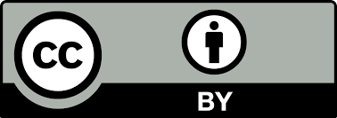
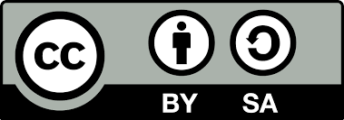
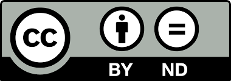
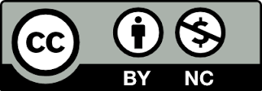

For this module we are supposed to investigate a possible licencing model to share our work, methods for disseminating our documentation. Another task for this week is to make a presentation
video, presentation.mp4 and a poster presentation.png in our root directory.
Our work or invention or Intellectual property could be protected by one or more of the following.
Many of these require paper work. We will by default have copyright to the material we have created and we just have to decide how we are planning to share it. This can be done with the help of a license. And most of our work is in electronic form, which makes it easy to choose a license.Let's forget about the income for the moment. At the moment, I'm not planning to market any of my ideas. Hence I can't say anything about it, I might change my mind later, in that case I'll update.b
By default, if one do not specify any type of licensing for his work, we are supposed to contact him, get his written permissions before we can use his creation/idea for our work or share it. That means it is automatically protected by copyright. But this is not always practical. Sometimes we might have to reveal our personal contacts in a public space, sometimes we may have to respond to large number of permission requests..., it's not always practical in this connected world to give permissions on a per request basis, we have to give some sort of permission beforehand for the whole world with our terms and conditions. The licences specify who can use and share our work and how can they do so.
I think it's perfectly valid to have our own terms and conditions, we will have to write everything down, it should not have any major loop holes... Also every user need to know about the licence before they use our creation, for this he has to read our terms and conditions and waste time. Similar terms and conditions for the software are something none of us read, we just accept them blindly, don't we?. I guess this is partially because we know what to expect in it, at least that's the case with me.
Generally 'terms and conditions' for the proprietary software and some hardware prevent us from tampering with the 'product', modifying it, sharing it, taking parts of it for our use etc. Some prevent us from using their product for our commercial purpose etc. And generally the permission to use their product need a licence key to activate the licence(which is actually them granting the permission to use the product) which will cost a few bucks.
Personally I'm against such 'terms & conditions' that prevents you from modding the product, prevents from knowing how it works, what it does etc.
For this reason I want to share my works to the public, so they don't have to do the same, they can continue where I left off, but under a few conditions.
If I'm going to write every aspect of this terms and conditions, it will take a lot of time, and for those who want to use my work, they will have to read this too. It's better to have
a standard agreement which we both can understand easily, something like the constitution of the a country, which also talks about rights and duties and everyone know it(or
they are supposed to).
This where the licences like
gpl-v2,
gpl-v3,
MIT sand
Creative Commons comes handy.
These licenses are standard, and concerned people will have easy access to them, they might even know some aspects of the license already. So I'll be exploring some of these licenses. These licences are free to use and will be make your copyright polished, it saves you from the burden of responding to lot of requests. Because by applying such a licence to my work , I'm already giving the public the permission to use my work under the the terms and conditions specified in the license.
I stated some of my terms and conditions, copyleft is the practice of doing exactly that. It gives the information free. give credit to the original creators and contributors, and all the derivatives and modifications will also follow the same procedure. I believe that this is the reason why we came so far from the apes, free distribution of the knowledge so that others can build up on that, one can only do so little with his short life. So everyone need not invent the wheel.

This is the simplest form, it lets others
distribute, remix, tweak, and build upon your work, even commercially, as long as they credit you for the original creation. This could enable the most people to use
your work. They are free to choose their on licensing for the new creation.

This gives the same permissions as above, but now the new creator has to share his work with exactly the same licensing terms as the original creator. Many public resources
like Wikipedia uses this licensing.
Very much the same thing as I wanted!
This is by far the closest thing among the variants of CC that I'm looking for. It's the closest to the Copyleft, well I think it's the same thing, see no difference.
 Essentially, No derivatives, restricts from forking your work.
This
allows for redistribution, commercial and non-commercial, as long as it is passed along unchanged and in whole, with credit to you. Basically restricts one from forking/modifying/building
up on your work. But they can replicate and share your work a it is.

Restriction from the commercial use of the creation. Rest all are the same as CC-BY.
Also, they are free to choose their on licensing for the new creation.
GNU Public License(GPL) is a common software license used by many opensource projects. This licensing boasts the copyleft scheme, stands for the the following freedoms.
source:-
Transcript of a speech by Richard Stallman.
As you see, the GPL mainly talks about the software, but the author is free to choose this licensing for his product, whether it's a code, image video, hardware...
The GPL was originally written by Richard Stallman in 1989, The second version came in 1991. Nearly two decades later it was revised and the
Free Software Foundation released the GPLv3 in 2007.
The GPL was written as a license for GNU, later Linux kernel and almost 70% of the OSS (open source Software) adopted it. Many of them now follows the GPLv3 except for some notable exception like Busybox, Linux Kernel, which refuses to update and in case of Linux Kernel it looks like the licensing is going be GPLv2 for the foreseeable future. I'll talk about this later.
The main idea for GPL is the freedom, the four freedoms I mentioned above. It also makes sure that any work that uses GPLed work is also GPL compliant. The GPLv3 also makes sure that the hardware also respects the GPL licensing, by preventing something called ' Tivoization', where a product uses a software that is completely GPLv2 compliant but restrict the freedom to run a modified code. This nasty trick is implemented in hardware. GPLv3 prevents this.
MIT license is so simple and small so that I'm just including the entire license itself.
The MIT License (MIT) Copyright (c)
<year> <copyright holders>
Permission is hereby granted, free of charge, to any person obtaining a copy of this software and associated documentation files (the "Software"), to deal in the Software without restriction, including without limitation the rights to use, copy, modify, merge, publish, distribute, sublicense, and/or sell copies of the Software, and to permit persons to whom the Software is furnished to do so, subject to the following conditions: The above copyright notice and this permission notice shall be included in all copies or substantial portions of the Software.
THE SOFTWARE IS PROVIDED "AS IS", WITHOUT WARRANTY OF ANY KIND, EXPRESS OR IMPLIED, INCLUDING BUT NOT LIMITED TO THE WARRANTIES OF MERCHANTABILITY, FITNESS FOR A PARTICULAR PURPOSE AND NONINFRINGEMENT. IN NO EVENT SHALL THE AUTHORS OR COPYRIGHT HOLDERS BE LIABLE FOR ANY CLAIM, DAMAGES OR OTHER LIABILITY, WHETHER IN AN ACTION OF CONTRACT, TORT OR OTHERWISE, ARISING FROM, OUT OF OR IN CONNECTION WITH THE SOFTWARE OR THE USE OR OTHER DEALINGS IN THE SOFTWARE
It cannot get any simple, can it?I prefer the CC-BY-SA License for all my Fab Academy documentation, the final project and all the assignments(documentation only). This is because unlike GPL, which is mainly targeted for software, the CC license is meant to cover all sorts of work. And CC-BY-SA satisfies the terms and conditions I listed. It's is also 'copyleft compliant'. But CC itself recomends afainst using it for source codes.
GPL also meets the above requirements, but it's mainly targeted at software, and then there is a debate going on, GPLv2 vs GPLv3, Linus Torvalds preferring GPLv2 for Linux Kernel and
Stallman promoting GPLv3, two big shots of the Open Source Universe debating.
But I personally agree with Stallman in the case of 'Tivoization', I think if a hardware uses GPL compliant code, it should make sure that it supports all aspects of it,
it should respect what the GPL stands for, the freedom.
There is another reason why Linux Kernel can't switch to GPLv3, there are too many copyright holders of the Linux Kernel. If Linux kernel code base has to switch over to GPLv3 It need permission from all of the copyright holders. Also the Linux Kernel has a license that doesn't have the "or later clause", which says that the said product will be compatible with GPLvX or later. The Linux Kernel said it's following GPLv2(only). If someone used or laterin their license, he will by default get updated to nay GPL versions that follows.
Careful when you choose a license, once you release it with a license, you cannot simply change it, you cannot say "Hey, guys, I changed my mind, I'm changing my license from this to that". This doesn't work like this, you may choose to change it, but then those who already used your work will continue to share their work along with your with the old license.
I'll be creating a license file in the repo specifying the license types I have used. Here it is. An entry is added to the index page too.
I have also included the presentation.png and presentation.mp4 in the root directory.
There are two parts for this, one spreading the literature fo my work, second marketing my product. First let's start about popularizing my idea, which will give me some popularity and credibility if I were to enter to the marketing.
I have uploaded my work/parts of my work at various places. The entire repo is available at github and archive.fabacademy.org.
Some of my works are vailable in youtube, sketchfab. But I'm yet to add links to my pages. Also grabcad is another interesting location, so is thingiverse.
I have joined concerned forums, for example EDMHomeBuilders @ yahoo. Where I'll be talking about my project.
Once completed I'll be uploading my project to Instructables, hackaday etc. I'll also sent the completed project build logs to a few magazines where it might get published.
Next thing is by talking about my work and showcasing it to various people at different occasions, like workshops, conferences etc. Simple mouth publicity.
As I said in the beginning, I'm not planning to market this product yet. But I can have some idea. First of all the above step will give me some base, along with documenting and pulicicating the other projects that I have done and planning to do in future will give me some credibiloity, people then will understand that I;m not blabbering like in many KickStarter/Indigogo projects. Then the important part is that I'll have to invest a lot of time(which means lot of money too) to this machine till a stage where it is reliable. Then I'll have to get it into a presentable machine, not a bunch of loose wires. It doesn't need to b look like a machine from Dyson, though that would be cool. I'm happy with something like an Ultimaker, but at the end it's not my happiness, it's the customers happiness that matters, but I think people who are going to use this machine will appreciate showing off a little bit of internals. May be I'm wrong.
Then there is need of a strong software interface, the algorithm for making the tool-path is something I'm yet to start working on. That I think I can figure out. But there as few aspects where I'm really bad at. One of them is GUI development, another is business/marketing. I have no idea about either of them, so definetly I'll be needing someones help.
As Neil said as comment for my project I'm 'partway to making the 200K $' Wire EDM machine that he has in his lab, and also I think that's more useful than a proof of concept machine
that uses this technique to just mill PCB when it's capable of doing so much more.
Which means I may switch to making a general purpose EDM machine.
As I said, first thing to do is a lot of R&D, which requires money, I'm hoping that someone, who has some interested in my project may come forward to support developing that.
So far, that's all I got to say about marketing. But I also don't know about the potential demand for such niche machine. May be every FabLab can have one, that's a good number! Anybody listening?
{kind=link}